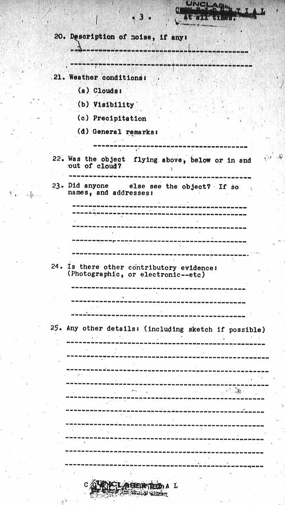

(Un formulaire distinct doit être utilisé pour chaque observateur.)
Détails de l'observateur
Nom de l'observateur : Prénom:-----------------Initiales----
Adresse de l'observateur : Voie-----------------Ville-------- Province--------------------
Profession et expérience antérieure pertinente :
Âge: -----------
L'observateur a-t-il vu des "objets volants" auparavant et, si oui, brièvement, quand, où, et dans quelles
circonstances : --------------------------------- ---------------------------------
---------------------------------
L'observateur portait-il des lunettes ? ---------------------------------
Détails de l'observation :
Date et heure locale : ----------------------------------
Position de l'observateur (aussi précisément que possible) --------------------------------
-------------------------------- --------------------------------
Description générale de l'observation : ---------------------------------
--------------------------------- --------------------------------- ---------------------------------
Page 2 du document d'origine
Nombre d'objets : ----------------
Durée d'observation : --------------
Position : où vu pour la 1ère fois : Direction : ----------------------
Elévation : ----------------------
Position où vu pour la dernière fois : Direction:----------------------
Elévation:----------------------
Description générale de tout changement dans la trajectoire : ----------------------------------
----------------------------------
Description détaillée de la forme apparente : ----------------------------------
---------------------------------- ----------------------------------
----------------------------------
Description détaillée de la luminosité apparente : ----------------------------------
---------------------------------- ----------------------------------
Description détaillée de la couleur : ----------------------------------
----------------------------------
Description de l'échappement ou de traînées de condensation, s'il y en avait :
----------------------------------- -----------------------------------
----------------------------------- -----------------------------------
Page 3 du document d'origine

Description du bruit, s'il y en avait : -----------------------------------
-----------------------------------
L'objet volait-il au-dessus, en-dessous ou dedans et dehors des nuages ?
-----------------------------------
Quelqu'un d'autre a-t-il vu l'objet ? Si oui nom, et adresses : -----------------------------------
----------------------------------- -----------------------------------
----------------------------------- -----------------------------------
Y a-t-il d'autres élements contributifs : (photographiques, ou électroniques--etc)
----------------------------------- -----------------------------------
-----------------------------------
Tous autres détails : (dont croquis si possible) -----------------------------------
----------------------------------- -----------------------------------
----------------------------------- -----------------------------------
----------------------------------- -----------------------------------
----------------------------------- -----------------------------------
-----------------------------------
Page 4 du document d'origine
Détails de l'interrogateur
Interrogateur: Prénom : ----------------Initiales----- Position tenue :--------------------
Date et lieu d'interrogation : -----------------------------------
-----------------------------------
Avis de l'interrogateur sur la fiabilité de l'observateur. -----------------------------------
----------------------------------- -----------------------------------
----------------------------------- -----------------------------------
----------------------------------- -----------------------------------
-----------------------------------